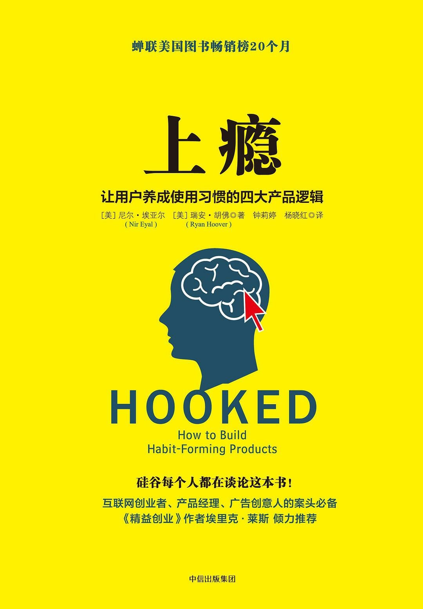

注：【】部分为笔者心得，非原文摘抄。
- 消费升级就是个人愿意付出更高的成本购买与自我价值相匹配的产品。
- 上瘾模型（Hook Model）的四个阶段是推动用户对产品形成依赖的有效途径：
- 触发：促使用户做出某种举动的诱因；
- 行动：用户在对某种回报心怀期待的情况下做出的举动；
- 多变的酬赏：
- 社交酬赏：用户从产品中通过与他人的互动而获取的人际奖励；
- 猎物酬赏：用户从产品中获得的具体资源或信息；
- 自我酬赏：用户从产品中体验到的操控感、成就感和终结感。
- 投入
- 习惯就是在情境暗示下产生的无意识行为。
- 企业仅凭占有庞大的客户群并不足以构成竞争优势，用户对产品的依赖型强弱才是决定其经济价值的关键。
- 人类行为的两个基本动因：
- 该行为简便易行；
- 行为主体有这个主观意愿。
- 奖励的变数越大，大脑分泌的多巴胺就越丰富，人会因此进入一种专注状态，大脑中负责理性与判断力的部分被抑制，而负责需要与欲望的部分被激活。
- 当用户为某个产品提供他们的个人数据和社会资本，并付出时间、精力和金钱时，投入即已发生。
- 将培养用户习惯作为开发产品的一个基本原则。
- 首先评估企业具体的生产模式和经营目标，看看是否与用户习惯之间存在密切的联系。
- 一般说来，用户对产品的依赖会给企业带来以下几个方面的好处：
- 更高的用户终身价值（Customer Lifetime Value）
- 更大的价格的灵活性
- 更快速的增长
- 更强的竞争优势
- 公司价值等于日后获得的利益总额，其参照标准取决于投资人如何计算该公司股票的合理价格。
- 在考核公司 CEO 和管理团队的业绩时，主要依据的是他们拉升公司股价的能力，因此 CEO 和管理者们最关心的莫过于自己公司产生的净现金流的大小。
- 让用户对产品形成依赖是提升公司价值的一个有效途径。
- 用户习惯让企业在提价问题上掌握更多的主动性。
- 从产品中不断发现惊喜的那些用户往往乐于和朋友分享这份感受。
- 能让用户积极参与的产品能够在竞争中以更快的发展速度超越对手。
- 使用频率越高，病毒式增长速度越快。
- 提高增长速度最关键的因素就是“病毒循环周期”，即老用户邀请新用户花费的时长。—— David Skok
- 用户对产品的依赖是一种竞争优势。
- 许多创新都以失败告终，因为用户总是过分地倚重原有产品，而商家却总是高估新产品。—— John Gourville
- 培养新习惯的过程中，最大的阻碍就是旧习惯。
- 要想让新习惯在用户的生活中生根发芽，就必须增加它的出现频率。
- 要想打造习惯养成类产品，企业务必认真考虑两个因素：
- 频率，即某种行为多久发生一次；
- 可感知用途，即在用户心中，该产品与其它产品相比多出了哪些用途和好处。
- 凡是成功的创新都有一个共性：能够解决问题。
- 如果你因为无法实施某种行为而感到痛苦，那说明习惯业已形成。
- 趋乐避苦是所有物种的共性。
- 通过发出行动召唤来暗示用户，这是打造习惯养成类技术的第一步。
- 选择项越多，用户用于权衡的时间就越久。
- 减少有关下一步行动的思考时间，能提高某种行为发展为无疑是习惯的可能性。
- 可供企业使用的外部触发共有 4 种类型：
- 付费型触发
- 回馈型触发
- 人际型触发
- 自主型触发
- 来自朋友或家人的推荐往往是科技传播的核心推动力。
- 将内部触发嵌入产品是消费者技术成功的关键。
- 情绪，尤其是负面情绪，是一种威力强大的内部处罚，能给我们的日常生活带来极大的影响。
- 当用户发现某个产品有助于缓解自己的烦恼时，就会渐渐地与之建立稳固且积极的联系。
- 承受抑郁情绪的人们会对网络产生更大的依赖性。
- 习惯养成类产品的终极目的就是获得用户的关注，消除用户的烦恼，使他们将某种产品或服务默认为温暖心灵的良方。
- 关注最基本的人性需求和渴望。
- 通过言语交流来让用户透露他们的所思所想似乎并不现实，因为他们自己也不一定明确知道是何种情感在背后发挥作用。
- 清晰地捕捉用户的想法和情感，了解他们使用某个产品的情境，是开发新产品时最重要的任务。
- 使人们行动起来的三要素：
- 充分的动机；
- 完成这一行为的能力；
- 促使人们付诸行动的触发。
- 能够驱使用户采取行动的三个核心动机：
- 追求快乐、逃避痛苦；
- 追求希望、逃避恐惧；
- 追求认同、逃避排斥。
- 一定要知道自己的目标客户到底需要些什么。
- 创新的三个基本步骤：
- 了解人们使用某个产品或服务的原因；
- 列举出用户使用该产品是的必经环节；
- 在明确整个过程的所有环节之后，开始做减法，把无关环节全部删除，直至将使用过程简化到极致。
- 越简单的东西越受欢迎。
- 推动网络创新的原动力就是将行为简单化。
- 任务的难易程度会直接影响人们完成这一任务的可能性。
- 影响任务难易程度的 6 个要素：
- 时间：完成这项活动所需的时间；
- 金钱：从事这项活动所需的经济投入；
- 体力：完成这项活动所需要消耗的体力；
- 脑力：从事这项活动所需要消耗的脑力；
- 社会偏差：他人对该项活动的接受程度；
- 非常规性：该活动与常规活动之间的匹配程度或矛盾程度。
- 对于技术公司来说，是否能获得丰厚的投资回报往往取决于能否提高产品使用的简易度。
- 当人们认为自己距离目标越来越近时，完成任务的动机会更强烈。
- 要想留住用户的心，层出不穷的新意必不可少。
- 人们对于社交酬赏以及同伴认同的渴望要远远大于对经济利益的期待。
- 在设计酬赏时，务必要考虑到用户使用该产品的原因，确保它与用户的内部触发和使用动机相吻合。
- 优秀的设计是以养成用户习惯为宗旨。
- 用户自主选择的权利会影响用户对于产品或服务的接受程度。
- 逆反心理，即在自主权受到挑战时，人们会感到自己失去了选择的自由，通常会对某种新的行为习惯产生排斥。
- 大部分用户都缺乏耐性。
- 社交因素事实上是推动人们使用某项服务并将其推荐给亲朋好友的最重要因素。
- 成功打造出习惯养成类产品的公司总是会潜移默化地影响用户，使他们在既有的行为方式和更便捷的改良模式之间做选择。由于产品保障了用户自主选择的权利，因此更容易被人们接纳，也更容易成为人们固定行为习惯的一部分。
- 要想使用户对产品抱有始终如一的兴趣，神秘元素是关键。
- 有限的多变性会使产品随着时间的推移而丧失神秘感和吸引力，而无穷的多变性是维系用户长期兴趣的关键。
- 产品中多变的酬赏在吸引用户的同时，必须满足他们的使用需求。
- 行动阶段应当尽量使用户即时获得满足，而投入阶段主要与用户对未来酬赏的期待有关。
- 对产品的投入会令用户形成偏好，因为我们往往会高估自己的劳动成果，尽力和自己过去的行为保持一致，避免认知失调。
- 用户只有在享受了各种酬赏之后才会对产品进行投入。
- 用户对产品的投入不仅可以改进产品服务质量，增加用户再次使用产品的可能性，还能令储存价值以内容、数据资料、关注者、信誉或技能等形式自然增长。
- 用户投入可以通过加载下一个触发的方式令用户重新开始上瘾循环，从而增加了用户反复进入上瘾循环的可能性。
- 为帮助习惯养成类技术呃设计者评估其操控用户背后的道德责任，首先要确定其工作性质：
- 健康习惯推广者：他们会使用自己开发的产品，并相信该产品可极大提高人们的生活质量。他们获得成功的概率最高，因为他们最了解其用户的需求；
- 兜售商：他们相信自己的产品可极大提高人们的生活质量，但自己并不使用该产品。他们必须谨防骄傲自大和脱离实际，因为他们在为自己并不了解的人提供解决方案；
- 娱乐用户者：他们会使用自己的产品，但并不相信该产品可以提高人们的生活质量。他们可以获得成功，但在某种程度上无法提高他人的生活质量，其产品往往缺乏持久力；
- 经销商：他们既不使用产品，也不相信该产品可以提高人们的生活质量。他们获得长久成功的概率最低，在道德上往往处于不利地位。
- 敏锐观察自己的行为有可能带来新的见解和创建习惯养成类产品的机会。
- 新生行为：即很少有人看或做，但最终会满足大众市场需求的新行为，能为今后带来突破性的习惯养成机会。